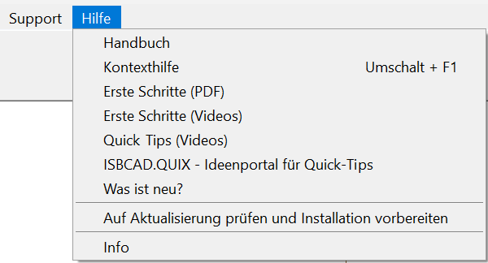
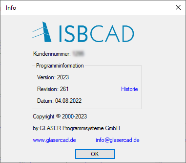

Im Menüpunkt [Hilfe] können Sie auf die Produktdokumentation und das Tutorial "Erste Schritte mit ISBCAD" zugreifen sowie die Aktualisierungsfunktion ausführen.
 |
Eintrag |
Beschreibung |
|---|---|
Handbuch |
Ruft die Startseite der kontextsensitiven Hilfe (dieses Dokument) auf. |
Kontexthilfe |
Ruft die kontextsensitive Hilfe (dieses Dokument) mit Informationen zur aktuell gewählten Funktion auf. Sie können die Hilfe auch über die Tastenkombination Umschalttaste (Shift) + F1 aufrufen. Siehe auch: Verwenden der Kontexthilfe |
Erste Schritte (PDF) |
Ruft das Tutorial "Erste Schritte mit ISBCAD" auf (PDF). In diesem Dokument werden die grundlegenden Schritte für das Konstruieren und Bewehren erläutert. |
Erste Schritte (Videos) |
Öffnet im Browser eine Playlist auf www.youtube.com mit dem Video-Tutorial "Erste Schritte mit ISBCAD". |
Quick Tips (Videos) |
Öffnet im Browser eine Playlist auf www.youtube.com mit kurzen Erläuterungsvideos zu ISBCAD-Funktionen. |
ISBCAD.QUIX - Ideenportal für Quick Tips |
Öffnet im Browser eine Plattform, auf der Vorschläge für Quick-Tip-Videos eingetragen werden können. Andere Anwender können für einen Vorschlag stimmen, und somit entscheiden, welche Quick-Tip-Videos aufgenommen werden. |
Was ist neu? |
Ruft die Neuerungen mit weiteren Produktinformationen in einer PDF-Datei auf. |
Auf Aktualisierung prüfen und Installation vorbereiten |
Vergleicht die Revisionsnummer der installierten Version mit der Revisionsnummer auf unserem Server. Liegt auf unserem Server eine aktuellere Version vor, können Sie diese herunterladen und installieren. Siehe auch: Aktualisierung (Revision) |
Info |
Gibt Auskunft über die installierte Programmversion und Revision, das Erstelldatum der Revision sowie Ihre Kundennummer. In der Titelleiste des Programmfensters können Sie die Informationen zu Ihrer Kundennummer, der Programmversion und der aktuellen Revision auch einsehen.  Historie: Zeigt den Revisionsverlauf (Changelog) mit behobenen Fehlern und Verbesserungen im Programm an. https://www.glasercad.de/: Zur GLASER Website. info@glasercad.de: Durch Anklicken der E-Mail-Adresse können Sie direkt eine Nachricht an uns senden. Der Mail-To Link ist nur ausführbar, wenn Sie ein E-Mail-Programm oder Webmail-Service nutzen. Für Support-Anfragen nutzen Sie bitte die Funktion E-Mail an Support senden. |
Siehe auch: